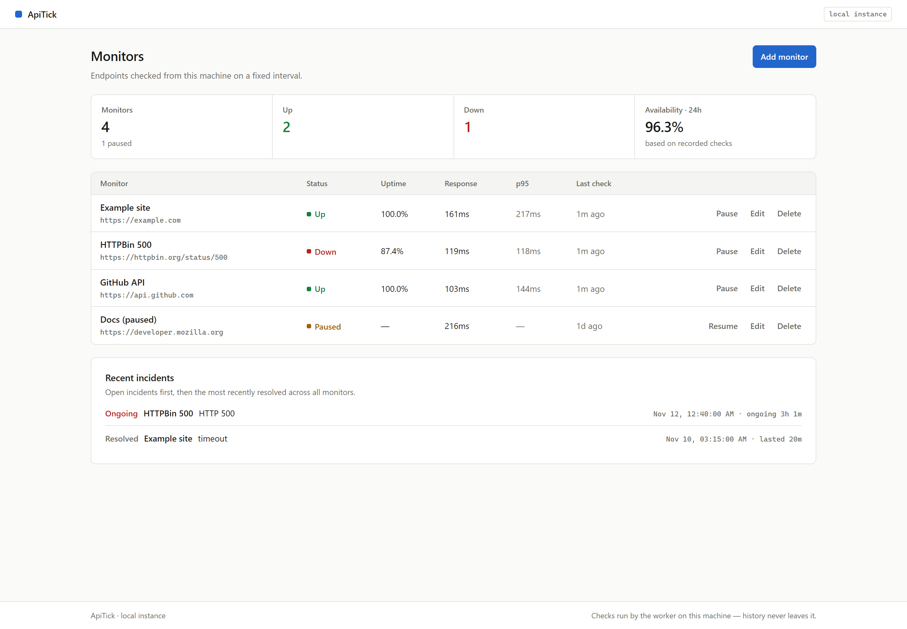
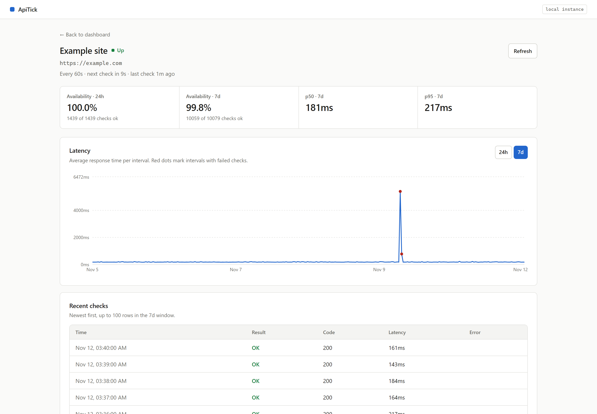

Know when your API stops answering.
ApiTick checks your endpoints on a schedule and keeps every result on your machine. No account, hosted service, or card needed.
React + FastAPI + SQLite
10 secfastest check interval
7 daysof check history
One filefor local data
A week, check by check.
Example week. Each mark is a ten-minute slice; the red gap is a brief sample outage that closes on the next successful check.
responding outage sample10 min per mark
A clear record when something goes wrong.
Add a public HTTP or HTTPS endpoint. A separate worker checks it, stores the response time, and opens an incident on the first failure. The next successful check resolves it.
- Catch more than downtime. Require a phrase in the response body, too.
- See the whole week. Review availability, latency, recent checks and incident history.
- Keep the data close. SQLite stores the history on your own machine.

Find the moment service dipped.
Availability and response times share the same timeline as checks and incidents, so you can see what changed and when.

Your checks stay on your machine.
ApiTick runs locally. The worker sends requests to the endpoints you add; the monitor list and check history stay in your SQLite database.